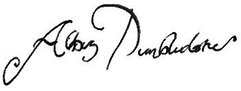

ÖNSÖZ
NEWT SCAMANDER benden “Fantastik Canavarlar Nelerdir, Nerede Bulunurlar?”ın bu çok özel baskısının önsözünü yazmamı istediğinde çok gurur duydum. Newt'un başyapıtı, yayımlanmasından bu yana Hogwarts Cadılık ve Büyücülük Okulu'nda onaylanmış bir ders kitabı oldu, öğrencilerimizin Sihirli Yaratıkların Bakımı sınavlarından sürekli iyi not almasında da büyük rol oynamıştır – ancak sadece dershaneyle sınırlandırılacak bir kitap da değildir. Çimenleri Cörkpâre'lerden temizlemek, Kahşin'in keder dolu çığlıklarını yorumlamak ya da evdeki Pofyumak'larını tuvaletten su içmekten vazgeçirmenin en iyi yöntemlerini bulmak için birçok kuşağın çevire çevire sayfalarını aşındırdığı bir Fantastik Canavarlar kitabı olmaksızın, hiçbir büyücü evi, tam bir büyücü evi sayılmaz.
Ancak kitabın bu baskısının, büyücü toplumunun eğitiminden de daha yüce bir amacı var. Böylece soylu yayınevi Obscurus'un tarihinde ilk defa, kitaplarından birini Muggle'lar da edinebilecek.
Comic Relief'in insanların en büyük ıstıraplarıyla mücadele ettiği, Muggle dünyasında zaten çok iyi biliniyor, onun için şimdi büyücü kardeşlerime hitap ediyorum. Bilin ki kahkahanın şifa verici gücünün farkında olan sadece biz değiliz, Muggle'lar da buna aşina. İşte bu yüzdendir ki, bu yetenekten son derece yaratıcı bir şekilde yararlanıyor, onu hayat kurtarmaya ve daha iyi yaşamaya yardımcı fonlar toplamakta kullanıyorlar – ki bu hepimizin erişmeye can attığı bir sıhir türü. Comic Relief 1985'ten beri 174 milyon sterlin'den fazla para topladı (otuz dört milyon sekiz yüz yetim, iki Galleon, on dört Sickle, yedi Knut).
Şimdi büyücü dünyası Comic Relief'e çabalarında yardımcı olma ayrıcalığına sahip. Elinizde, Harry ve arkadaşlarının sayfalarına koyduğu aydınlatıcı notlarla birlikte, Harry Potter'ın kendi Fantastik Canavarlar kitabının bir kopyasını tutuyorsunuz. Gerçi Harry kitabın bu haliyle basılmasına izin vermekte biraz gönülsüz davrandı ama, Comic Relief'teki dostlarımız onun küçük eklemelerinin kitabın eğlendirici havasına da katkıda bulunacağı kanısındalar. Başyapıtının acımasızca karalanmasına çoktan alışmış olan Mr. Newt Scamander da bunu kabul etti.
Fantastik Canavarlar'ın bu baskısı Flourish ve Blotts'ta olduğu gibi Muggle kitapçılarında da satılacak. Ekstra bağış yapmak isteyen büyücüler de bu iş için Gringotts Büyücülük Bankası'na başvurmalı (Griphook'u isteyin).
Bana düşen de bu kitabı para vermeden alıp buraya kadar okuyanları, kitabın Hırsız Laneti taşıdığı konusunda uyarmak. Sırası gelmişken, burada anlatılan eğlendirici yaratıkların kurmaca olduğunu ve onlara zarar vermeyeceğini söylemek suretiyle alıcıları da rahatlatmak isterim. Büyücülere ise sadece şunu söylüyorum: Draco dormiens nunquam titillandus.
